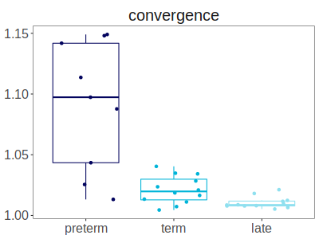
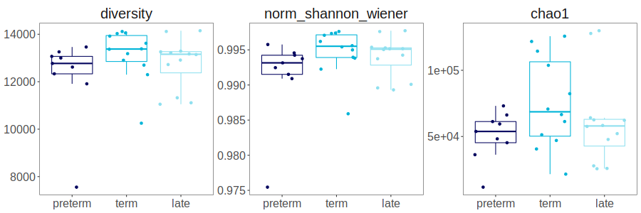
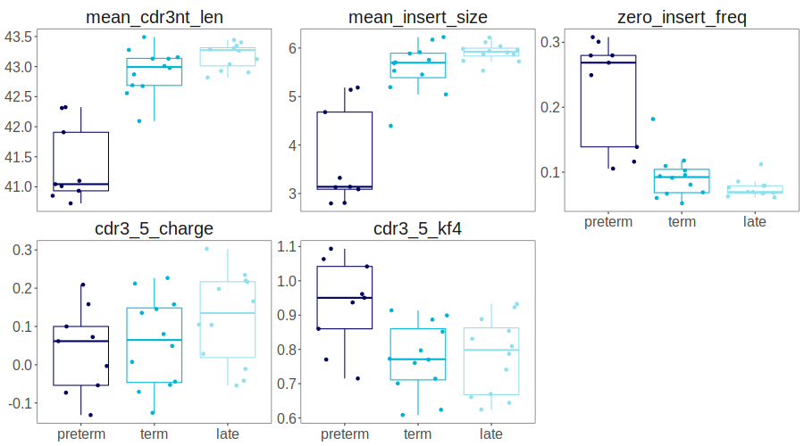
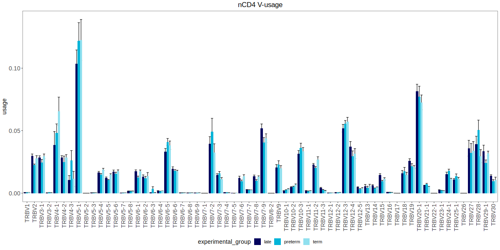

Usage: calculating basic stats for a clonoset
Stats module allows to calculate various stats for all clonosets and for individual clonosets.
Working with clonosets
To read all clonosets (.tsv format, MiXCR3/4 typical output names, VDJtools or Bioadaptive formats) in a directory or several directories, use find_all_exported_clonosets.
from repseq import clonosets as cl
from repseq import stats
from repseq import clone_filter as clf
from repseq import io as repseqio
from repseq import vdjtools
clonosets_dir_or_dirs = '/home/user/sample/mixcr'
clonosets = cl.find_all_exported_clonosets(clonosets_dir_or_dirs).sort_values(by="sample_id").reset_index(drop=True)
Output table example:
| sample_id | chain | filename | |
|---|---|---|---|
| 0 | sample_1_nCD4_1_TRB | TRB | /home/user/samples/mixcr/sample_1_nCD4_1_TRB.clones_TRB.tsv |
| 1 | sample_2_nCD4_1_TRB | TRB | /home/user/samples/mixcr/sample_2_nCD4_1_TRB.clones_TRB.tsv |
| 2 | sample_3_nCD4_1_TRB | TRB | /home/user/samples/mixcr/sample_3_nCD4_1_TRB.clones_TRB.tsv |
VDJtools
To convert clonosets (in a form of a dataframe) to VDJtools format, use:
Reading a single clonoset into pd.DataFrame
To read a single clonoset in a tab-separated format (.tsv, .txt, .tsv.gz or .zip (reads the first file)) format, use read_clonoset function from io module:
Filtering clonosets
Filter is a special object, that may be used as a setup for Postanalysis. You can easily create or change it and put as an argument to other functions for individual clonoset or multi-clonoset metrics. For functionality, possible values are:
a- any (default). No clones are filtered out.f- only functional. Those not having stop codons and frameshifts in CDR3 regions, or having non-empty values in CDR3 amino-acid sequence.n- only-nonfunctional - opposite tof- functional.
Other commonly used parameters:
- Using
seedis highly advised when using top and downsample filters. Setting a specific value ensures the reproducibility as these filters use pseudorandom number generation. - With
by_umi= True, Filter() uses counts based on UMI if the corresponding columns are present; otherwise, counts are based on reads. mix_tails= True is recommended for top filter, as sorting with identical counts may not be random.
To see all possible parameters and their description, visit clone_filter module description.
Most commonly used filters:
-
by functionality: only functional clones (no frameshifts and stops), counts by UMI
-
by functionality, takes top clonotypes by UMI count.
Seedparameter is used for reproducibility -
by functionality, count by UMI, randomly samples a clonoset down to 15000 UMI
-
by functionality, all clonotypes with UMI count less than
count_thresholdwill be filtered out
Filtering a clonoset:
Clonoset stats
Calc stats for clonoset size in clones, reads and UMIs
| sample_id | chain | clones | clones_func | clones_func_singletons | clones_func_non_singletons | clones_nonfunc | clones_nonfunc_freq | reads | reads_func | reads_nonfunc | reads_nonfunc_freq | umi | umi_func | umi_nonfunc | umi_nonfunc_freq | |
|---|---|---|---|---|---|---|---|---|---|---|---|---|---|---|---|---|
| 0 | sample1_nCD4_1_TRB | TRB | 145012 | 135644 | 49523 | 86121 | 9368 | 0.0646016 | 1566949 | 1509856 | 57093 | 0.0364358 | 349587 | 337223 | 12364 | 0.0353674 |
| 1 | sample2_nCD4_1_TRB | TRB | 134150 | 126556 | 48485 | 78071 | 7594 | 0.0566083 | 772217 | 746989 | 25228 | 0.0326696 | 312575 | 302754 | 9821 | 0.0314197 |
| 2 | sample3_nCD4_1_TRB | TRB | 68965 | 64585 | 24802 | 39783 | 4380 | 0.0635105 | 793340 | 766721 | 26619 | 0.0335531 | 163789 | 158403 | 5386 | 0.0328838 |
Calculating CDR3 properties. In this example, only functional clonotypes (=no frameshifts or stops) are used.
basic stats for CDR3 regions. CDR3 amino acid sequence properties (both full sequence and central 5-residue sequence (closer to N-term in case of even length))
func_filter = clf.Filter(functionality="f", by_umi=True)
cdr3_properties = stats.calc_cdr3_properties(clonosets, cl_filter=func_filter)
| sample_id | chain | mean_cdr3nt_len | mean_insert_size | zero_insert_freq | mean_frequency | cdr3_5_hydropathy | cdr3_full_hydropathy | cdr3_5_charge | cdr3_full_charge | cdr3_5_polarity | cdr3_full_polarity | cdr3_5_volume | cdr3_full_volume | cdr3_5_strength | cdr3_full_strength | cdr3_5_mjenergy | cdr3_full_mjenergy | cdr3_5_kf1 | cdr3_full_kf1 | cdr3_5_kf2 | cdr3_full_kf2 | cdr3_5_kf3 | cdr3_full_kf3 | cdr3_5_kf4 | cdr3_full_kf4 | cdr3_5_kf5 | cdr3_full_kf5 | cdr3_5_kf6 | cdr3_full_kf6 | cdr3_5_kf7 | cdr3_full_kf7 | cdr3_5_kf8 | cdr3_full_kf8 | cdr3_5_kf9 | cdr3_full_kf9 | cdr3_5_kf10 | cdr3_full_kf10 | cdr3_5_rim | cdr3_full_rim | cdr3_5_surface | cdr3_full_surface | cdr3_5_turn | cdr3_full_turn | cdr3_5_alpha | cdr3_full_alpha | cdr3_5_beta | cdr3_full_beta | cdr3_5_core | cdr3_full_core | cdr3_5_disorder | cdr3_full_disorder | |
|---|---|---|---|---|---|---|---|---|---|---|---|---|---|---|---|---|---|---|---|---|---|---|---|---|---|---|---|---|---|---|---|---|---|---|---|---|---|---|---|---|---|---|---|---|---|---|---|---|---|---|---|---|
| 0 | sample1_nCD4_1_TRB | TRB | 43.1311 | 5.91418 | 0.0669883 | 7.37224e-06 | -3.6533 | -3.49631 | 0.145473 | -0.25535 | 2.47028 | 7.38906 | 457.085 | 1393.35 | 0.929842 | 4.54233 | -14.1225 | -44.0132 | 1.87336 | 1.88425 | -2.91408 | -5.49689 | 0.0863277 | -0.583377 | 0.899116 | -0.293989 | -1.00823 | -2.86921 | -1.18772 | -1.7715 | 0.94773 | 0.770087 | 1.27514 | 0.193953 | -1.9049 | -0.106618 | 0.368452 | -1.06328 | 0.306982 | 0.767234 | 0.310197 | 0.797021 | 5.81511 | 14.9261 | 4.4949 | 14.1549 | 4.83404 | 14.1038 | 0.290491 | 0.776406 | 2.31293 | 2.60787 |
| 1 | sample2_nCD4_1_TRB | TRB | 42.6894 | 5.45495 | 0.0937428 | 7.90164e-06 | -3.63854 | -3.7497 | -0.070658 | -0.65764 | 2.52354 | 7.43611 | 453.382 | 1376.69 | 0.954769 | 4.53017 | -14.1263 | -43.5042 | 1.95697 | 1.73002 | -2.96411 | -5.37987 | -0.189644 | -1.12346 | 0.76061 | -0.362696 | -0.959487 | -2.87697 | -1.19542 | -1.66914 | 0.654523 | 0.440107 | 1.30386 | 0.341753 | -1.90955 | -0.0793168 | 0.297878 | -1.35161 | 0.306715 | 0.760597 | 0.310945 | 0.791057 | 5.87189 | 14.8052 | 4.49732 | 14.0927 | 4.81489 | 13.9093 | 0.289834 | 0.766072 | 2.2879 | 2.64048 |
| 2 | sample3_nCD4_1_TRB | TRB | 43.1306 | 5.53264 | 0.109455 | 1.54835e-05 | -3.5389 | -3.36705 | 0.226643 | -0.13198 | 2.45753 | 7.38413 | 463.875 | 1401.24 | 1.01215 | 4.64907 | -14.3082 | -44.2336 | 1.88087 | 1.95313 | -2.68089 | -5.22143 | 0.141751 | -0.455098 | 0.772542 | -0.446082 | -1.0089 | -2.85593 | -1.24996 | -1.84142 | 0.968762 | 0.771571 | 1.23777 | 0.206734 | -1.78501 | 0.0142436 | 0.431144 | -1.00567 | 0.302192 | 0.761093 | 0.305975 | 0.791293 | 5.76219 | 14.8705 | 4.50163 | 14.148 | 4.8573 | 14.1363 | 0.29094 | 0.777235 | 2.11711 | 2.3694 |
Calculating diversity stats. It includes observed diversity, Shannon-Wiener, normalized Shannon-Wiener and chao1 index for each clonoset in clonosets_df. Here, a top_n filter is applied.
| sample_id | chain | shannon_wiener | norm_shannon_wiener | diversity | clonality | chao1 | |
|---|---|---|---|---|---|---|---|
| 0 | sample1_nCD4_1_TRB | TRB | 9.53229 | 0.997617 | 14116 | 0.00238349 | 125744 |
| 1 | sample2_nCD4_1_TRB | TRB | 9.52557 | 0.997336 | 14059 | 0.00266397 | 121758 |
| 2 | sample3_nCD4_1_TRB | TRB | 9.43915 | 0.994989 | 13183 | 0.005011 | 61315.5 |
Calculating convergence (=the number of unique CDR3 nucleotide sequences that code for the same amino acid sequence) for each clonoset in clonosets_df.
| sample_id | chain | convergence | |
|---|---|---|---|
| 0 | sample1_nCD4_1_TRB | TRB | 1.01114 |
| 1 | sample2_nCD4_1_TRB | TRB | 1.03426 |
| 2 | sample3_nCD4_1_TRB | TRB | 1.02362 |
Segment usage (combined frequency of segments) can be calculated for V/J/C-segments. All possible options are ["v", "j", "c", "vj", "vlen", "vjlen"]. vj - usage of combinations of v and j segments. vlen and vjlen options also take the length of amimo acid CDR3 length into account and calculate usage for particular combination.
The resulting dataframe can be in either long or wide format:
long- four columns:sample_id,chain,<segment_type>,usagewide- num of rows equals to the number of input clonosets, and all segments are the columns and usage is in each cell.
Custom stats
Stats module has a special function generic_calculation which performs multiple individual clonoset statistic calculation. It runs all individual clonoset calculations in parallel.
Instruction:
- First, create a
function_name_clwhich performs individual clonoset calculation; - Create a main wrapper function named
function_name, which passesfunction_name_clandclonosets_dftogeneric_calculation.
In this example, Crohn's-associated invariant T cells (CAITs) are identified across clonosets.
import re
def find_caits(clonosets_df, cl_filter=None):
df = stats.generic_calculation(clonosets_df, find_caits_cl, clonoset_filter=cl_filter, program_name="Find CAITs")
return df
def find_caits_cl(clonoset_in, colnames=None):
clonoset = clonoset_in.copy()
# find colnames for freq, count, v, j and so on
if colnames is None:
colnames = cl.get_column_names_from_clonoset(clonoset)
# create a motif to search for
cait_motif = re.compile(r'CVV[A-Z]{2}A[A-Z]{1}GGSYIPTF')
trav = "TRAV12-1"
traj = "TRAJ6"
# perform calculation of motif abundance
clonoset["cait_cdr3aa"] = clonoset[colnames["cdr3aa_column"]].apply(lambda x: cait_motif.search(x) is not None)
clonoset = clonoset.loc[clonoset[colnames["v_column"]] == trav]
trav_freq = clonoset[colnames["fraction_column"]].sum()
clonoset = clonoset.loc[clonoset[colnames["j_column"]] == traj]
trav_traj_freq = clonoset[colnames["fraction_column"]].sum()
clonoset = clonoset.loc[clonoset["cait_cdr3aa"]]
cait_freq = clonoset[colnames["fraction_column"]].sum()
cait_clonotypes = len(clonoset)
# save it to dictionary
result_dict = {"cait_clonotypes": cait_clonotypes,
"cait_freq": cait_freq,
"trav12_1_freq": trav_freq,
"v12_1_j6_freq": trav_traj_freq}
return result_dict
tra_clonosets = cl.find_all_exported_clonosets("/projects/cdr3_common/repseq_demo/custom_stats_clonosets/")
clonoset_caits = find_caits(tra_clonosets, cl_filter=func_filter)
| sample_id | chain | cait_clonotypes | cait_freq | trav12_1_freq | v12_1_j6_freq | |
|---|---|---|---|---|---|---|
| 0 | sample1_nCD4_1_TRB | TRA | 4 | 7.93676e-05 | 0.0382234 | 0.00144449 |
| 1 | sample2_nCD4_1_TRB | TRA | 1 | 3.55821e-05 | 0.0360803 | 0.00170794 |
| 2 | sample3_nCD4_1_TRB | TRA | 5 | 0.000124894 | 0.0386671 | 0.002348 |
Convergence visualization
Calculated stats can be visualized in Jupyter notebook using %%R cell magic. 
%load_ext rpy2.ipython
%%R -i convergence,metadata -w 400 -h 300
params_order <- c("convergence")
convergence %>%
merge(metadata) %>%
select(sample_id, experimental_group, subset, convergence) %>%
pivot_longer(-c(sample_id, experimental_group, subset), names_to="parameter", values_to="value") %>%
mutate(experimental_group=factor(experimental_group, group_order)) %>%
mutate(parameter=factor(parameter, params_order)) %>%
ggplot(aes(x=experimental_group, y=value, color=experimental_group)) +
geom_boxplot(outlier.shape=NA)+
geom_jitter()+
facet_wrap(vars(parameter), scales="free_y")+
scale_color_manual(values=colors_6_groups) +
boxplot_theme+
theme(legend.position="none")
Diversity visualization
Calculated stats can be visualized in Jupyter notebook using %%R cell magic. 
%load_ext rpy2.ipython
%%R -i diversity_stats,metadata -w 900 -h 300
params_order <- c("diversity", "norm_shannon_wiener", "chao1")
diversity_stats %>%
merge(metadata) %>%
select(sample_id, experimental_group, subset, diversity, norm_shannon_wiener, chao1) %>%
pivot_longer(-c(sample_id, experimental_group, subset), names_to="parameter", values_to="value") %>%
mutate(experimental_group=factor(experimental_group, group_order)) %>%
mutate(parameter=factor(parameter, params_order)) %>%
ggplot(aes(x=experimental_group, y=value, color=experimental_group)) +
geom_boxplot(outlier.shape=NA)+
geom_jitter()+
facet_wrap(vars(parameter), scales="free_y")+
scale_color_manual(values=colors_6_groups) +
boxplot_theme+
theme(legend.position="none")
CDR3 properties visualization
Calculated stats can be visualized in Jupyter notebook using %%R cell magic. 
%load_ext rpy2.ipython
%%R -i cdr3_properties,metadata -w 900 -h 500
params_order <- c("mean_cdr3nt_len", "mean_insert_size", "zero_insert_freq", "cdr3_5_charge", "cdr3_5_kf4")
cdr3_properties %>%
merge(metadata) %>%
select(sample_id, experimental_group, subset, mean_cdr3nt_len, mean_insert_size, zero_insert_freq, cdr3_5_charge, cdr3_5_kf4) %>%
pivot_longer(-c(sample_id, experimental_group, subset), names_to="parameter", values_to="value") %>%
mutate(experimental_group=factor(experimental_group, group_order)) %>%
mutate(parameter=factor(parameter, params_order)) %>%
ggplot(aes(x=experimental_group, y=value, color=experimental_group)) +
geom_boxplot(outlier.shape=NA)+
geom_jitter()+
facet_wrap(vars(parameter), scales="free_y")+
scale_color_manual(values=colors_6_groups) +
boxplot_theme+
theme(legend.position="none")
V-segment usage visualization
Calculated stats can be visualized in Jupyter notebook using %%R cell magic. 
%load_ext rpy2.ipython
%%R -i v_usage,metadata -w 1200 -h 600
v_usage_order <- v_usage %>% select(v) %>% distinct() %>%
separate(v, into = c("f", "l"), remove = F, convert = T) %>%
separate(f, into = c("s", "n"), remove = T, convert = T, sep="V") %>%
arrange(n,l) %>% pull(v)
v_usage %>%
merge(metadata) %>%
mutate(v=factor(v, v_usage_order)) %>%
ggplot(aes(x=v, y=usage, fill=experimental_group)) +
stat_summary(fun.data=mean_se, geom="errorbar", position="dodge")+
stat_summary(fun=mean, geom="col", position="dodge")+
theme_bw()+
theme(
text = element_text(size=14),
axis.text.x = element_text(size=14,angle=90, vjust=0.5, hjust=1),
axis.text.y = element_text(size=14),
axis.title.x = element_blank(),
plot.title = element_text(hjust = 0.5),
panel.grid = element_blank(),
legend.position = "bottom"
)+
ggtitle("nCD4 V-usage")+
scale_fill_manual(values = colors_6_groups)